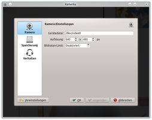

Kamerka
Dieser Artikel wurde für die folgenden Ubuntu-Versionen getestet:
Ubuntu 14.04 Trusty Tahr
Zum Verständnis dieses Artikels sind folgende Seiten hilfreich:
Kamerka  ist neben Kamoso eine weitere KDE-Anwendung, um Bilder mittels einer Webcam aufzunehmen. Ähnlich wie bei Cheese steht eine möglichst einfache Bedienung im Vordergrund. Im Gegensatz zu Anwendungen, die nur die Grafikbibliothek Qt zur Gestaltung der Programmoberfläche einsetzen und damit auch problemlos unter anderen Desktop-Umgebungen genutzt werden können, setzt das Programm die Installation der Bibliotheken von KDE bzw. Kubuntu voraus.
ist neben Kamoso eine weitere KDE-Anwendung, um Bilder mittels einer Webcam aufzunehmen. Ähnlich wie bei Cheese steht eine möglichst einfache Bedienung im Vordergrund. Im Gegensatz zu Anwendungen, die nur die Grafikbibliothek Qt zur Gestaltung der Programmoberfläche einsetzen und damit auch problemlos unter anderen Desktop-Umgebungen genutzt werden können, setzt das Programm die Installation der Bibliotheken von KDE bzw. Kubuntu voraus.
|  | |
| Hauptfenster | Einstellungen |
Installation¶
Das Programm ist in den offiziellen Paketquellen enthalten. Folgendes Paket muss installiert [1] werden:
kamerka (universe)
 mit apturl
mit apturl
Paketliste zum Kopieren:
sudo apt-get install kamerka
sudo aptitude install kamerka
Das Programm ist anschließend im "K-Menü" unter "Anwendungen -> Multimedia -> Kamerka" zu finden.
Bedienung¶
Die Steuerung erfolgt über die Schaltflächen am unteren Bildschirmrand:
| Bedienungselemente | |
| Aktion | Beschreibung |
| "Foto machen" | Einzelbildaufnahme |
| "Selbstauslöser" | Zeitgesteuerte Aufnahme. |
| "Mehr" / "Weniger" | Ein-/ausblenden zusätzlicher Elemente. |
| "Konfigurieren" | Programmeinstellungen anpassen. |
| "Verzeichnis öffnen" | Bilderordner im Dateimanager öffnen. |
Einstellungen¶
| Einstellungen | |
| Reiter | Beschreibung |
| "Kamera" | Pfad zur Webcam, Auflösung der Cam und ein Limit für Bildraten setzen. |
| "Speicherung" | Speicherort für Schnappschüsse festlegen. |
| "Verhalten" | Soundausgabe bei Aufnahmen und die Ausgabe von Benachrichtigungen (de)aktivieren. |
- Erstellt mit Inyoka
-
 2004 – 2017 ubuntuusers.de • Einige Rechte vorbehalten
2004 – 2017 ubuntuusers.de • Einige Rechte vorbehalten
Lizenz • Kontakt • Datenschutz • Impressum • Serverstatus -
Serverhousing gespendet von